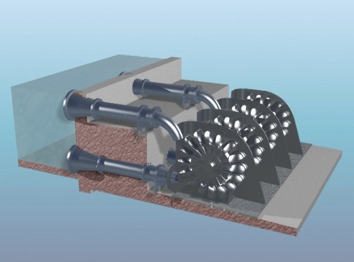

At SansOx, we are committed to making a positive impact across three critical areas of water management: enhancing natural water ecosystems, purifying potable water for safe consumption, and innovating in wastewater treatment. Explore our solutions below.
The product highlights as SansOx publishes them: the fastest way to dissolve gas into liquid · effective mixing · efficient pH control · installs into the existing pipeline · vertical installation possible · aerates even without external energy · modular to customer requirements · small footprint · easy to remove and clean.
Low DO is the first symptom of a dying water body. OxTube raises it in the flow — DCWOx at discharge points, RiverOx anchored in rivers, ClariOx circulating ponds.
Clearer water lets sunlight — and photosynthesis — reach deeper. An aerated lake can shift from emitting carbon to binding it.
Lady Bug circulates and aerates shoreline water so algae never gets started — clearer water at the summer cottage without chemicals.
Stocking density is limited by oxygen. OxTube saturates the water in seconds — measured at 3 s in a working farm — without stressing the fish.
A submersible-pump barrel unit that keeps hazard water clear and odour-free — in shallow water, and under winter ice.
Studies link higher dissolved oxygen to faster root growth. DripOx oxygenates the irrigation line before the water reaches the roots.
Booster and OxTube strip radon inside the pressurised pipeline; GasRemox separates the gas. Six stations meet the 11 Bq/l limit in the Philippines.
Oxidise in-line, precipitate in a controlled step, catch in sand filters — instead of in your network. Delivered as a container or into the pump house.
Same setup as iron removal — pH plays the bigger role. OxTube, GasRemox and sand filters, in the existing line.
Low pH usually means dissolved CO₂. UGOx strips it in the pressurised pipeline — pH rises without adding a single chemical.
Ground and surface waters carry dissolved gases that don't belong in drinking water. UGOx removes them in-line — no tanks, no extra pumping.
OxTube plus an ozone generator, containerised or standalone. Ozone breaks residues and kills microbes — without reaction tanks.
Treated water usually leaves the plant oxygen-poor. One pass through OxTube raises DO towards saturation — powered by the flow itself.
Aeration drives the biology that eats the load. OxTube dissolves air every time the water moves through it — efficiently, in the pipe.
Gases formed in the process are stripped in the pressurised line by UGOx — before they cause trouble downstream.
H₂S forms in anaerobic conditions — a lethal problem in pulp and paper. Keeping DO up prevents it; aeration also strips what has formed.
90 % of pharmaceutical residues removed in 0.7 seconds at a municipal plant — published at IWA Milan 2021. Installed in the outlet pipe.
From regeneration water to discharge: wherever the process starves of oxygen, the tube dissolves it back — with the energy of the flow.

SansOx render: the RiverOx river-aeration concept.
Descriptions from sansox.fi product pages, condensed. Full texts on request — or in the original store pages.